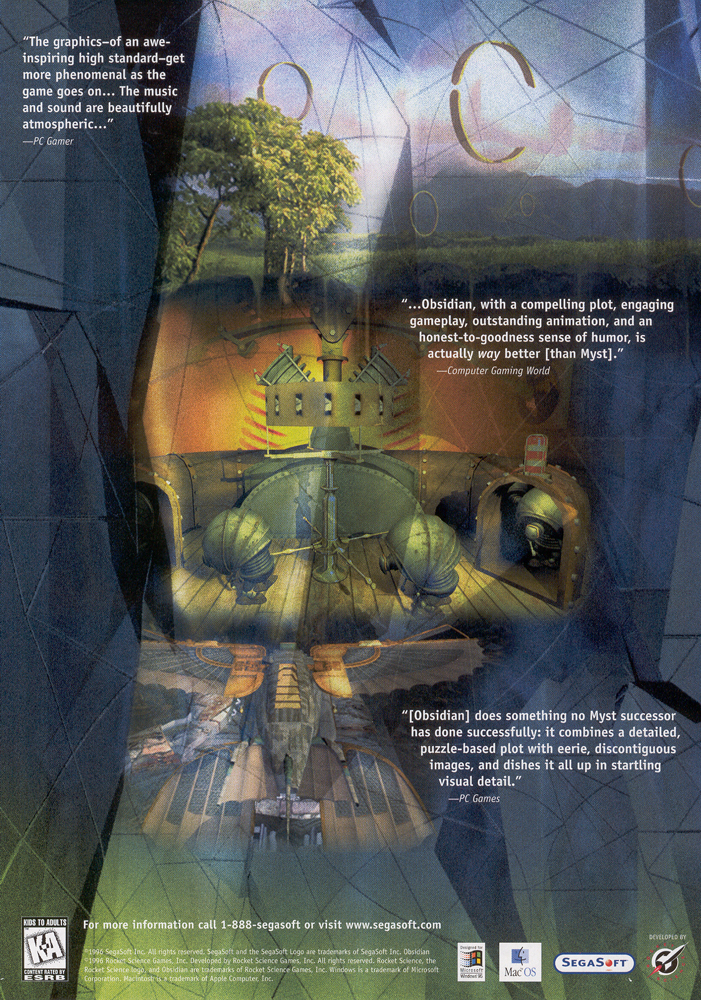
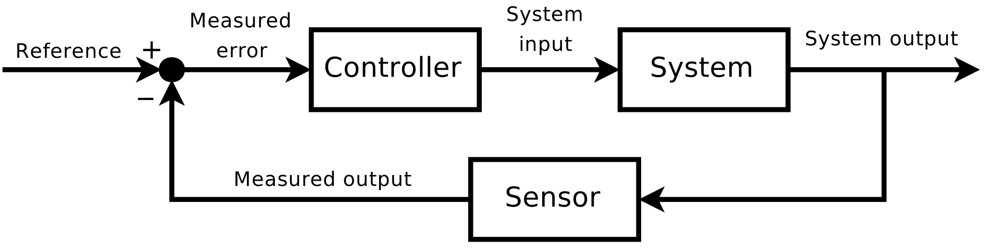
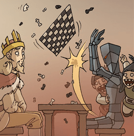
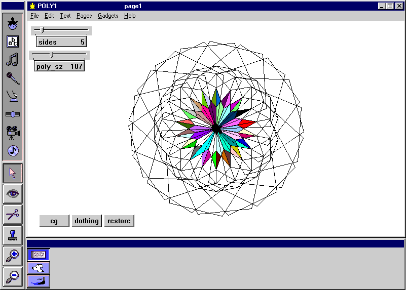
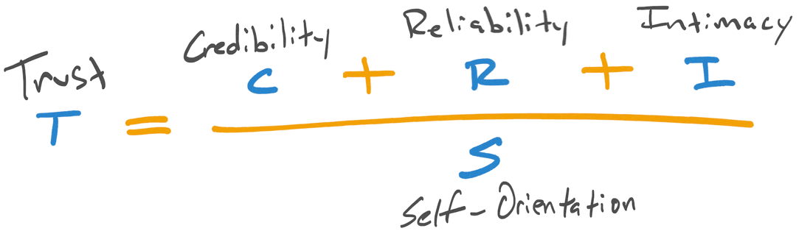
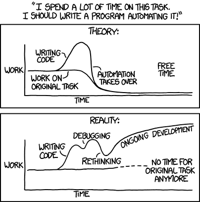
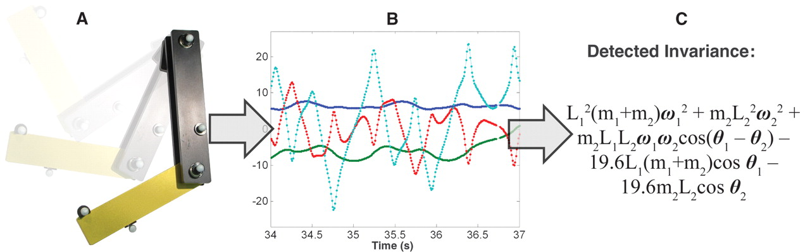
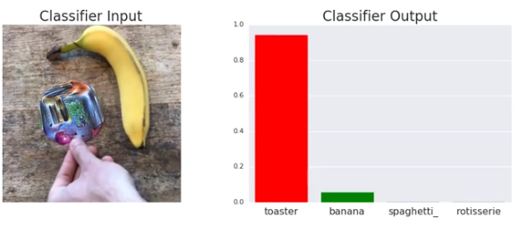

Hey! This is Karl, and I’d like you to let me tell some stories. Why? Because while it has been a formidable challenge, I’m happy (and, to be honest, relieved) to share a framework for reasoning about the design of systems that can optimize themselves.
Part of why I have been successful in what I do is that I have a lot of intuition and skills built up to solve this problem. I’d like you to have them, too, but the way I think is pretty tightly intertwined with what I’ve experienced.
As the lead of the Developer Efficiency team on League of Legends: Wild Rift, I put these skills into practice to align hundreds of developers across timezones and language barriers. While we did build tools, the key to our success was understanding that self-improvement hinges on building feedback loops that can measure, steer, and improve human systems without fighting the humans inside them.
If you’re interested in that journey, read on!

One thing many people don’t know about me is that, for a few years, I was dead-set on being a mechanical engineer. In my third semester of college, freshly disillusioned with the realities of nanotechnology, I wanted something more well-behaved; something I could reason about and interact with. So, I made a hard swing to the physical end of the engineering spectrum. I decided I was going to make machines.
Studying over the summer to catch up in my new major was when I first learned, formally, about closed-loop feedback theory. It’s such a natural concept that, until a textbook introduced it, my intuitive understanding of air conditioning, cruise control and pressure regulators was more than enough to get by.

It’s not too hard to fill in this handy closed-loop system diagram for things we interact with every day:
| Topic | System | Sensor | Controller |
|---|---|---|---|
| Central Air | House | Thermostat | AC & Furnace |
| Cruise Control | Car | Speedometer | Throttle |
These are negative feedback loops: stabilizing forces that push a system toward a reference. On the other hand, the positive feedback loop builds on itself. Direct experience with positive feedback is often experienced in the form of echoes in online meetings that end in a high-pitched squeal. However, it’s this same effect that cell phones use to amplify faint electromagnetic waves from remote towers. It’s what causes neurotransmitters to bring us out of sleep in the morning. It creates the zen resonance of singing bowls.
Why are we talking about closed-loop feedback?
Because in a way, you could say that one of my major successes while I was at Riot was analyzing a system (a development team), installing some sensors (metrics about the project) and a controller (an automated daily developer newsletter) that helped the team ship Wild Rift to millions of players.
Cool, right?
However, the newsletter (unsurprisingly called “DevNews”) didn’t work just because I smeared some controls theory magic around on our developers and called it a day. There was a fundamental concern: the system wasn’t a physical process. This system involved people, and we tend to make things messy.
Unlike an air conditioner or a car, people have strong opinions about a machine measuring us and telling us what to do. Plus, being intelligent, goal-oriented and limited on time, we ignore anything that seems meaningless and try to avoid interacting with systems we don’t like.
But does that mean it’s impossible to build systems that improve us? Clearly not. Despite kids hating homework, we have education!
In other words, when a system involves humans, it must accommodate our peculiarities.
As the US Air Force discovered in the 1950’s, cockpits made to fit averages were correct for zero out of four thousand pilots. Averaging each of ten dimensions for a pilot’s arms, legs, feet and so on yielded values for which absolutely nobody was within a 30%-wide margin of them all. This blew a lot of professionals’ minds, as they’d been building planes this way for more than three decades. But as soon as manufacturers were forced to fix the cockpits so they could adjust to accommodate all measurements in the middle 90%, accidental crashes declined dramatically.
People are weird. A lot of stuff about us is unintuitive, but well-designed systems reward us with something truly remarkable: Flow. In the Flow state, the user and the system are so in sync that the interface between the two dissolves. Flow is very hard to design, but is so pleasant that it can make time disappear and cause a 7-year-old Karl to spend every free moment at the computer unintentionally studying science and math.
Game designers recognize this idea as the heart of making games. It’s our job to craft systems of fun for our players despite them acting however they do and despite them optimizing their interests over all others. It’s their fun to have, not ours. That’s why we have to think about cheating. That’s why we have to consider how committed players might over-optimize their own gameplay by min-maxing and ruin the fun for themselves.
This is always the same idea whether it takes the form of creating a Minimum Viable Product to find out what users really want, or doing A/B testing to see how game rules are affected by the choices players actually make.
What happens when we make live games with systems that rub against human nature? The publisher must continuously invest resources to smooth that problem down. Convincing players not to leave a competitive online game mid-match is a perfect example.
Multiplayer Online Battle Arenas (MOBAs) are fundamentally broken when any of the ten players run away. The game is like football: the rules don’t really work without equally sized teams.
However, humans often desire escape from uncomfortable feelings like shame, frustration, defeat, and anger. There can be a whole lot of those emotions during a team-based competitive game. Running away from an online game is not hard and generally lacks repercussions.
Uh oh.
As a result of human nature, we have the tendency to break games by leaving them in what is commonly known as a ragequit.

The design of a MOBA doesn’t accommodate the “ragequit” peculiarity of humans. What’s more, the negative emotion that caused the ragequit can spread from the rage-quitter into up to nine other people whose game was just ruined. Those people can go on to spread this game-breaking emotion in future games where it can, again, spread.
Besides being just annoying for players when it happens, rage-quitting is a potential positive feedback loop of game-breaking emotion.
That jives with how a game community spirals into being known for toxicity: self-reinforcing bad behavior enabled by the structure of a system. To counteract this negative behavior for its own sake is virtuous. However, the designers of this kind of game are effectively required to build additional systems that cost time, energy and money in order to influence players to avoid rage-quitting. It’s absolutely worth the investment, but since we are talking about optimizing system design, we must recognize this need as a cost paid to the game’s design.
However, not all games work this way. Some structures are much more tolerant of player dropout by design. Games in the battle royale and extraction shooter genres continue to function normally even if players drop out because attrition is exactly how the game resolves. A ragequit is structurally the same as an ordinary loss.
A similar set of guiding principles for accommodating people is found in Human-Computer Interaction Design concepts like natural mapping and affordances. It doesn’t matter that C++ and Unreal Blueprints can do almost exactly the same thing. Given HCI principles, we could intuit that Blueprints is probably a much more user-friendly interface, which matches what you hear any time game designers compare the two.
Where game design rules help us build fun things for players and HCI principles help us create interfaces that work well for users, is there a set of principles that can help us design a system which is able to teach, optimize, and grow with its creators?
The short answer is yes, and that’s exactly where we’re going! But we’ll need to make our way through a few stops along the way:
- Wetware Compatibility — Automated systems involving human activity need to obey a special set of rules. We’ll talk about how to leverage these rules to the benefit of a system and, conversely, see how incompatibility costs can make certain kinds of systems tear themselves apart.
- Trust and Favors — Automated systems involving human activity need to be able to reliably guide peoples’ behavior. We take a closer look at the delicate situation around doing this in ways that aren’t rejected by wetware.
- A Safe Metric to Optimize — We need something that correlates with efficiency and doesn’t create degenerate side-effects when optimized. The obvious choice of “speed” is a trap, and we’ll see why in this section.
After introducing and justifying these ideas, I’ll go through the construction of a system that can optimize systems of people from the ground up and “show my work” for the decisions this framework led me to make in practice.
Wetware Compatibility
“Wetware” is a sci-fi term I’m co-opting to roughly mean “the operating system that generally runs human minds.” Wetware is whatever it is that makes people do what they do naturally. Wetware-compatibility refers to how well systems mesh with users’ natural behavior, anticipating it (and perhaps leveraging it) as part of their own design.
The clearest example I can give of a wetware-compatible system is simply called “The Game”:
Whenever you think about The Game,
you must announce "I just lost The Game."Besides being hilariously clever to middle schoolers, The Game has some fascinating properties. Its core mechanics run on human memory: random thoughts involuntarily pop into our minds, repeating thoughts reinforces them, and it’s difficult to intentionally forget.
Due to how memory works, if your brain happens to remember something that reminds you of The Game, you are likely also to remember The Game. Because The Game is nothing but one rule, you’re likely to remember how it works. The Game then leverages motivation we get from “having fun” to encourage a low-stakes action: saying a couple silly words to those around us. However, if saying “I just lost The Game” out loud makes someone nearby curious enough to ask what you’re talking about, The Game spreads. This one rule is a system that sustains its own existence by making copies of itself in peoples’ minds.
As long as we are human, it’s easy to imagine that The Game will always exist somewhere in someone’s mind. It’s so simple that even if it were lost entirely, it could be recreated. This is a self-reinforcing system run by wetware. Put more simply: The Game is a mind-virus.
The Game doesn’t do anything besides provide entertainment, of course, but it suggests that systems involving wetware can be intentionally designed in a way that causes them to be reinforced by users’ natural behavior.
Oh, and by the way: you just lost The Game. You’re welcome!
In my final semesters, having moved from MechE to ECE to a CS Masters’, curiosity led me to choose Distributed Systems and Cryptography as my advanced major classes. And as I graduated, the USA was still pulling through the Great Recession and everyone’s attention was captured by the harsh lesson in economics we were all getting: things are worth exactly what someone else will pay for them.
Given the above, it’s probably no surprise that I became fascinated by the whitepaper that combined all those topics and more into one high-tech experiment: Bitcoin. The mix of new technology with an origin mystery (and the surrounding community drama) created a fascinatingly geeky form of entertainment I couldn’t resist reading about.
The Bitcoin rollercoaster ride was many peoples’ first time to be formally exposed to what happens when anonymous players engage in a competitive online game. But to me, it was reminiscent of PvP chat from my favorite old-school MMO. The in-game stories we would recognize from multiplayer sandbox RPGs like EVE Online and Rust were being borne out in real-time headlines with famous names and eye-watering valuations. And sure enough, between the scammers and betrayal, shifting alliances and hacking, patterns we recognize as game designers showed up, too.
First, Bitcoin reminds us that trust is extremely valuable. The billions of dollars invested in hardware alone to service this networked behemoth are a testament to the value of software that manufactures trustworthiness. Fortunately, this is not too surprising. “Goodwill” is well known in corporate accounting as an intangible long-term asset with a specific dollar value. Even more simply, escrow companies and money-back guarantees exist for a reason: it’s worth cold hard cash to be able to trust in something.
Second, Bitcoin owes its success to wetware-compatibility. Bitcoin didn’t invent the cryptography it uses. The idea of digital gold had been around for more than a decade. Its breakthrough innovation was putting pieces together into an algorithm that naturally grows with its own users and continues to function despite every single human in the world acting in their own interests before the system’s. Thanks to clever design, users’ self-interest keeps Bitcoin running.
With these things in mind, comparing Bitcoin to game testing automation is an interesting exercise since these are both pieces of software created to benefit the people that use and maintain it.
On one hand, Bitcoin miners independently choose to spend massive amounts of money, time and effort to improve and sustain this piece of software, sometimes despite others actively telling them not to.
On the other hand, most game devs can tell stories of expensive test automation software being abandoned in favor of a return to manual Quality Assurance.
What the heck is going on here? What is it about these systems that makes people treat them so differently?
Trust and Favors
I learned to program so I could play games.
When I was young, one of my favorite games was Super Mario World. At home, we were allowed educational games like Gizmos & Gadgets or puzzle-adventures like Obsidian. But at a friend’s house or at daycare, my brother and I got to play the fun games. These games had jumping apes and plumbers and, to an adult, absolutely no redeeming value. Our researched arguments that play could increase hand-eye coordination got nowhere.
Wanting to obey the rules of the house banning these kinds of games but still get our fix, my brother and I thought that if we could figure out how to use this “Microworlds” program to make a game on the computer, we could play our creation without fear of it being taken away. After all, that would make no sense—we could “simply” remake it!

Years later, I found myself in another forbidden-gaming scenario. I could no longer play the PvP MMO I loved, and again not by a force I could subvert: it was by that game’s own creator!
By 2002, one guy had iterated his way to a bizarre black-licorice masterpiece of a PvP sandbox game that I found in a desperate search for free MMOs. The only thing is, he has some good ideas but a bad sense for game design and never stopped iterating. The game mutated into an unrecognizable form despite the community’s outcries. I felt betrayed and disappointed by the update that released a broad swath of “new ideas”. I no longer recognized the game. Realizing I’d just lost my all-time favorite gaming experience (still true today), I gave away my account and never really played again.
So, like I had with Super Mario and Microworlds, I set out to remake it.
At that point, free AAA game engines like Unity and Unreal didn’t exist. Hell, Gmail didn’t even exist. I sat with the 3-inch tome that was “The Zen of Direct3D Game Programming”, purchased from Barnes & Noble with birthday money, on my lap and hand-copied sample code into the demo version of a compiler installed from a CD-ROM on a computer with no internet.
With absolutely no idea what I was doing but a lot of enthusiasm, I roped in a bunch of friends including my brother to try to make the game with me. Over time, friends grew into an online community, and before I knew it college happened and I was making a game in my “spare time”.
The only thing was, I couldn’t pay anyone. I had absolutely no authority to tell anyone on the “team” what to do. In a lot of ways, I worked for them: I built the engine and posted updates on the Unseen Studios forums as fast as I could so that they’d keep making the game with me. They made stuff I asked for so that I’d keep learning to code and make the engine for them.
One way to think about this implied arrangement is that we paid each other using favors. Over time, the favors got bigger as the trust built between us that we were really doing this together. After a couple years, it reached the point where people would send me donations so that I could buy models to put in a game they saw me building but hadn’t played yet. The favors I doing had started to achieve dollar-value.
Favors and trust go hand-in-hand, and I can’t emphasize enough: they have real, measurable value.
Unfortunately, this works for scammers, too. We see it work for con artists in MMO trades, cryptocurrency heists and those friendly but demanding mis-spelled emails from a purported Nigerian prince. At the root of all of these scams is someone convincing someone else to trust them enough to oblige them with a favor.
We should think of anything an automated system asks a person to do as a favor. People have free will and can simply decide to put off the favor your system asks until a later. It’s like the halting problem: we can provide input and watch the process run, but we can’t make an algorithm that predicts whether it will achieve the outcome.
Information systems have absolutely no control over what people do. They only have influence, and influence has to be achieved genuinely. Wetware has built-in defense mechanisms against being pestered by fake influence. “Spamming” and “crying wolf” are extremely negative trust-breaking attributes quickly assigned to systems that try to overstep their allotment by grabbing attention. This is the entire reason we have control over individual apps’ notifications on our phones and why ad companies fight spam: it’s not worth risking the user rejecting the whole system because some misbehaving parts broke the user’s trust.
Information systems only have influence, so they must ask people for favors in order to act. Anything that reduces trust in a system will diminish the favors that system is able to ask.
Therefore, if a system requires favors from people to maintain itself—especially if not taking the actions required is part of a destructive positive feedback loop—then there is one simple but ironclad edict for this kind of system:
Maintain trust.
This is the first major difference between Bitcoin and test automation. Bitcoin is defined by its users’ trust in the system, right down to the genesis algorithm. As a result, it can trade in gargantuan favors: developers have entirely switched careers in order to maintain this system.
On the flip-side, test automation breaks trust whenever it reports inaccurate results. This is, unfortunately, both common and tolerated. But the benefits of automation show up as work we don’t see, while the costs show up as work we do.
This is the design trap that so many test automation systems fall into. The favor of a test-fix is a lot to ask for a system that doesn’t do obvious favors in return and is not seen as all that trustworthy. Depending on how test maintenance is assigned between QA, production, design and engineering, the system’s maintainers can be constantly motivated to dismantle the thing because even when it’s working properly, it generally annoys them.
The balance is off, and it must be paid.
We can try mandating that favors be done for a system, but as we’ve seen, making people change their natural behavior is a sustained cost. And even so, without innate alignment, the implementation of favors can be easily misinterpreted.
Misalignment is the mechanism by which smart, well-meaning people complete requests literally and yet entirely miss the point of what they were asked to do.
This is how “remove X from the automated build process” becomes “split the automated build process up and do X as a manual step” instead of “automate X”. A system without mutual understanding has a hard time getting people to reliably do the right thing even when its requests are being fulfilled.
Trust is established in large part by continuously reinforcing mutual understanding, so it follows that an untrustworthy system is also unlikely to be generally well understood. A system misaligned with its users won’t make requests effectively. In effect, trustworthiness directly impacts a system’s ability to get things done.
The old idea here is, again, pretty familiar: if people don’t like the system but are forced to work with it anyway, we’ll abide by the letter of the law but not the spirit.
Fortunately, the answer is simply for a system to establish and maintain trust, and that is a well-studied subject. My favorite model was introduced to me not long after I started working in games.
It breaks trustworthiness into a formula of contributing factors: trustworthiness = (credibility + reliability + intimacy) / self-interest. In other words, the first three help establish trust, but the last can bring it down entirely.

This works whether we’re considering a piece of software or a person. Anything from a virtual assistant to a comedian can establish trust with us this way.
For the purposes of a game development team, we don’t have to start an Efficiency Engine with absolutely no trust like Bitcoin did. We can jump-start the trust cycle and start out asking bigger favors by bestowing it with the trust others place in the people creating it.
At first, sponsors and leaders can use their own credibility and authority to get people to take the system seriously and get the cycle started. However, for reasons we’ve seen, it’s a bad idea to keep pestering people like that forever. Leaders bleed credibility by propping up bad tools. The systems we build must be able to establish and maintain trust on their own so they can ask for the favors that keep them running.
Building for Ourselves
I like to automate things. Sometimes, I write programs as a way of understanding a problem. Other times, it’s about taking care of a tedious chore or eliminating an earflick. A QBASIC program to generate the “show your work” steps of my high school math homework. A password manager or four. A house that nudges our family awake by turning on the lights and brewing coffee. A website that taught me to hear Pinyin.
I’ve basically always done this for myself, so in retrospect it’s unsurprising that I automated CPU manufacturability testing when I graduated and went to work at Intel. I built a number of tools to analyze graphics performance, scan firmware for multithreading issues and optimize wire layouts. When I eventually joined Riot, I started out in R&D building prototypes (which are basically automated design documents) and deeply customized Unity to make designer content tools.
The point is that I’ve built and used automation for a while now, and it’s not just ego-bias when I say there’s an acute difference between being a user of my own software and what I generally get to consume from other developers: My own tools are tailored to fit me. Other tools expect me to change to fit them.
We see this same idea reflected in many forms: User stories. Playtest feedback. Remember the Air Force pilots? There’s no such thing as an “average pilot” for an airplane any more than there is an “average developer” for dev tools.
Unfortunately, developers of internal tools generally ignore this truth when we make non-consumer-facing software and systems. That’s where the dichotomy I experience is born.
When I build for myself, user testing is an inescapable part of the process. I don’t go out of my way to do it because testing is inescapable. I build my tools in a way that works well enough for me because otherwise I wouldn’t use them.
When we build experiences for players, we have learned to bend over backward to understand and accommodate their natural reactions and odd behavior. We can’t expect people to change what they find fun so we can use some cool mechanic or convenient tech. Game developers aren’t perfect at it, but we’re required to make games that meet players where they are because that’s the only way we stay in business. But when developers build systems for one another, what do we do?
We have good intentions, but pressure on a project is usually released in ways that are as non-obvious as possible: taking internal shortcuts, assuming solutions, dropping nice-to-have features, limiting user testing and skipping polish.
When we gotta get this thing done because we need to hurry up and move on to the next thing, our coworkers are sympathetic and will put up with the cobbled-together system we reluctantly deliver. They know we mean well and that we’ll get around to fixing the minor issues when we have time. But time is always limited, and after a while, promised fixes fall by the wayside. We just deal with it and get on with our lives.
You may have noticed that I’m pushing open the boundaries of our conversation a little bit. We’re not just talking about writing code. The software we build for one another inevitably creates work processes and patterns of action around the life of that software, from inkling to deprecation. It’s impossible to build software without also creating systems for people around that software. We just don’t think about it that way very often.
From here, I’m going to use the word “systems” more than the word “software” to remind us that holistic design accounts for the software and everything people need to do to use it.
Again, what happens when developers build for each other? Sympathetic colleagues give us tacit permission to deploy easier-to-make but incompletely thought-out systems. So, that’s what we do.
This is the second huge difference between Bitcoin and test automation: where the former must be wetware-compatible to survive, the latter is usually built in the friendly captive-audience situation we find at work. Weak spots can be propped up by goodwill, authority and incentives rather than requiring solid system design. Under pressure, we build ourselves wetware-incompatible systems.
But because humans are (again) intelligent, goal-oriented and limited on time, it’s easy to push things down the priority queue like fixing software that is bothering you again because you’re doing your normal job correctly. That’s the wetware-incompatible experience many developers have with test automation tools.
Put another way: automation doesn’t fail because it stops being a good idea or people suddenly decide they hate it. It fails because people can justify disengaging from a system they don’t really like, and a loss of engagement gradually creates its own justification.
Automation without maintainers tears itself apart as natural changes in the system being tested will cause more and more tests to be “temporarily” disabled. As more tests are disabled, the value of the system decreases. Developers can point to how difficult it will be to fix as a reason to deprioritize fixing it. This positive feedback loop can leave the system a mere shadow of its former promise unless someone “catches the falling knife” and invests to reverse the downward momentum.
This is the same basic phenomenon behind stock market swings, Bitcoin bubbles and Kickstarter campaigns: hype reinforces itself.
Wetware-compatibility means recognizing and utilizing human behaviors rather than ignoring or fighting them. Games like SuperBetter and tools like Anki are incredible examples of careful system design synergizing with human psychology.
Fortunately, though it might seem strange from some angles, wetware-compatibility too ends up being a familiar idea. It’s the same principles that allow an app to teach languages or a MOBA to teach teamwork.
Building wetware-compatible systems requires embracing human nature. These systems must understand and adapt to how people really are, not what we would like them to be. Our designs cannot assume users comprehend and are aligned with the system’s interests at all times. This remains true for well-meaning and motivationally aligned users like a team of game developers.
A Metric to Optimize
To help us resolve the dilemma of how to build a wetware-compatible system for improving developer efficiency, let’s start with the solution proposed by most internal tools & automation initiatives. Pretend we have a fresh-slate group of developers that doesn’t have much internal automation. The typical, compelling and easy-to-make case to build or buy something that yields efficiency gains usually goes like this:
- Developers are spending time doing work that a machine could do
- Compared to developers, machines are cheap and easy to scale
- Automating work is a short-term cost that will free up a lot of expensive developer time
- We should invest in automation
Given that logic, a Developer Efficiency team should be a service organization that automates away as much manual work as possible. Sounds good, right?
Well, it wouldn’t be much of a trap if it didn’t have bait!

It can be quite tempting to automate away manual tasks and short-term pain. We often don’t even consider that doing so may reinforce, obscure or even create larger, much more limiting inefficiencies in the inherent structure of the system.
Remember those less-than-perfect systems we permit each other to build? Their existence is another hint that it cannot always be a good idea to just make stuff faster. We can’t strap a V8 to our Roomba and expect it to vacuum the house in under sixty seconds. Not only is rotating the wheels not the core problem, but the design of the system just didn’t have that use case in mind. It probably isn’t all that well accommodated!
Nintendo recognized this idea, too. By placing important pieces of their task tracking system in the world of Breath of the Wild itself, developers could efficiently coordinate and iterate on the game’s massive amount of dynamic story content. Nintendo fundamentally re-thought the system involved, rather than seeing the inefficiencies of their existing solution as a reason to switch to Jira or hire more PMs.
To make developers more efficient and effective, we need a way to find and make better decisions than “work faster” because the improvements that approach can make are limited and possibly double-edged.
What we really care about maximizing is not just speed, but rather sustainable, holistic developer effectiveness. And while we can make improvements by optimizing parts of the system in isolation, we’ll run into its limits. A Roomba that can go 60 miles an hour across your dining room may even cause problems. Safely exceeding the limits in the structure of a system requires larger, more fundamental changes.
In other words, similar solutions can be incrementally better, but the best solution is not necessarily nearby in the space of available solutions.
What we seek is the globally optimal level of holistic efficiency for a given development team working within a given set of systems.
We can sample the function for different inputs, but it is too complex to solve analytically. Furthermore, the parameter space is much too large to be exhaustively explored; it includes all work systems that can possibly be used for a given development team.
Anyone with a Machine Learning (ML) background is probably a little ahead of us at this point, having already imagined where this is going. The situation we find ourselves in shares a lot with the fundamental problems that inspire ML algorithms.
In the next section, we’re going to derive a function that optimizes sustainable, holistic efficiency without the pitfalls of maximizing speed.
When I was growing up, the idea of absorbing volunteers’ spare CPU cycles was enjoying a wave of popularity with the introduction of SETI@home, the screen saver that let you aid in the search for extraterrestrial life.
Unable to get it running on our old computer, I discovered a similar endeavor called The GOLEM Project. This screensaver evolved and evaluated “Genetically Organized Lifelike Electro Mechanics”, or GOLEMs. The colorful little wireframes scooting across my screen were my first look at Machine Learning algorithms in action.
If we fast forward a decade, I had the fortune to work as a researcher for the co-author of that software, Hod Lipson, at his Computational Synthesis Lab. For four years and two summers, everything around me was steeped in self-assembly, evolutionary algorithms and automated manufacturing under the umbrella of our mission to create artificial life.
A colleague at the lab published an amazing algorithm that can take huge data streams and derive the system of equations that relates them. A double-pendulum is a simple but nasty chaotic beast that undergrad mechanical engineers, including myself at the time, learn about in Dynamics. Its behavior is rigorously defined but incredibly hard to predict more than a few seconds into the future.
Despite the double pendulum’s complexity, given nothing but a video, this software could derive the equations of motion right down to deriving the gravitational constant.

The code was able to basically re-do, from scratch, several hundred years of human physics research in a matter of days. It even went on to make novel discoveries, like a system of differential equations defining a particular microorganism’s metabolism.
The only problem is, this and all learning algorithms share a flaw: we can make them work, but we can’t deduce exactly how they work.
Due to this flaw, we’re sometimes surprised by what a machine learning algorithm does. A computer can be trained to quite reliably tell breeds of dog apart in a set of photographs. But if the input changes in the right way, imperceptible differences turn a border collie into a beagle. Put a weird sticker on the table and a banana is recognized confidently as a toaster.

A common misconception is that things are inefficient because they are complicated. While the two intuitively go together, counterexamples such as this exist. Computer chips are extraordinarily complicated, yet also extremely efficient. People know the difference between a banana and a toaster without a second thought, but satisfying that simple request with a computer is very inefficient.
Why can computer chips calculate billions of times faster than us but fail to efficiently and reliably recognize beagles and bananas? Because where the former asks a system to do something specific with well-formatted inputs, the latter asks a system provided with a cacophony of unstructured data to deliver something vaguely defined.
This effect can be seen in the physical world, too. At the heart of Bitcoin is an algorithm that users want to run as fast as possible. Just about any generic computation device can execute the algorithm, but they do so with varying levels of efficiency.
Inefficiency in a computer algorithm means it is executing unnecessary logic. Computer logic is implemented by turning on and off tiny electrical switches called transistors. Switching transistors on and off creates heat. As a result, when the algorithm runs on hardware not well-suited to the task, it must run slowly or the heat will cause the chip to melt itself.
In the early days, the Bitcoin algorithm ran well enough on normal consumer CPUs. As time went on, folks figured out how to run the algorithm on their gaming graphics cards. This allowed them to run the same algorithm much faster (and also caused a brief shortage in the supply of GPUs).
Eventually, it became worthwhile to invest in bespoke computers called Application-Specific Integrated Circuits. The one and only thing these ASICs can do is run this algorithm, but they’re by far the most efficient at it and therefore can run the fastest without melting. No matter where we look, ambiguity and generality is inefficient. Clarity is positively correlated with efficiency.
But what’s so great about clarity?
Optimizing clarity does not create tricky degenerate side-effects when wetware seeks to maximize it.
Being “too clearly understood” is the thought-equivalent of a photograph being “too in-focus”. There’s no such thing; there is a point at which a subject is in focus or clear, and degrees to which it is not. That’s why we have the idea of “perfect focus,” kinda like we have “perfect clarity”. We use them interchangeably in English speech as metaphors for the same thing.
It’s a lot easier to relax both focus and clarity than achieve it. They don’t occur easily and must be actively maintained. And while we can conceive of ideas being micromanaged or over-communicated, those things are tangents from the axis of clarity.
Unlike increasing speed, raising clarity does not reinforce a system’s current state, thereby making it harder to improve. In fact, clarity may even do the opposite by exposing the current system’s flaws and inspiring self-motivated change.
Therefore, the primary metric we should optimize in order to increase efficiency of our game developers is the clarity of our work and systems.
Growing an Efficiency Engine
We have (finally!) arrived at the beginning. The interconnected set of principles we’ve covered so far provide a safe environment in which we can grow an Efficiency Engine:
The mission of a developer-efficiency team is to maximize clarity using wetware-compatible closed-loop systems.
Now, without further ado: let’s apply this framework and see how it contributed to the launch of Wild Rift.
We start by making the temporary assumption that we can talk to an oracle.
An oracle is a being with perfect knowledge often used to prove or evaluate security guarantees in cryptography. Oracles can do whatever you want them to, and are handy tools for reasoning about system design. Eventually, during the construction, an oracle gets replaced with a realistic equivalent once the oracle’s important properties are known.
So let’s pretend we have an oracle which can tell us the perfect, most globally-efficient set of systems for a development team.
This probably sounds like assuming we have the answer and then solving the problem, but unfortunately even with this oracle there is an immediate issue: the perfect set of systems it’s giving us is based on the current state of our development team.
Even if the oracle told us every single rule we needed to follow, they may not be optimal for long enough that everyone can learn to use them before they are no longer optimal. We could, of course, pretend to have an oracle that can tell the future with perfect certainty and avoid this pitfall, but it’s not obvious that such an oracle could even exist (theoretical problems with paradoxes) and we’ll run into problems in a few minutes when we try to relax this power back into something real. So let’s leave time travel alone for now and see what we can do with a less fundamentally problematic oracle.
Even with this minimally-powerful-but-still-impossible oracle telling us perfect answers, we can’t help but change the state of the development team as we attempt to employ those answers. After all, that’s the point! No matter how we look at it, change is inevitable. Natural stages in the development process like simply hiring more people can cause the best set of systems to no longer be compatible with the way things need to work. And it’s impossible to argue with the fact that time passes and people are mortal, so systems will always change eventually.
At this point, we might throw up our hands and say, “It’s everyones’ responsibility to know how to do their job. If an oracle can tell us the answers, we can just mandate that everyone do what they say!”
However, we’ve shown that this approach is pretty clearly wetware-incompatible. Companies can (and do) try to make this happen, but pay the price of inefficiency because the innate desire to repeatedly learn and practice new work systems over time is just not very strong in busy people. Every reorganization of a company structure and change in process creates friction as people adapt and re-form social bonds at unpredictable rates.
Yet as we’ve already demonstrated, even in an idealized world we must iterate on development systems over time in order to keep up with what is optimal. Is this a contradiction? No, it simply means we need a way to work well within systems we don’t fully understand so that those systems are able to change and improve as we do the same.
For this to happen, the oracle can’t be a passive reference available for people to look at and pull from at their leisure. Busy people don’t do that. We need to push ourselves toward the oracle’s ever-changing reference point.
Sounds like a perfect job for closed-loop negative feedback!
So assuming, for now, that we have this oracle-provided reference, we’ll need to fill in the controller and the sensor. You already know that these ended up being Dev News and a set of project metrics, but understanding how we arrived at that point matters because it sets the direction for what came next.
Dev News, the Controller
The controller turned out to be Dev News: a daily automated newsletter for Wild Rift developers.
I wrote the first version entirely in Google Apps Script powered by ingesting a torrent of email attachments from automated systems across the company. It aggregated data and turned it into a dashboard that instantly answered “how are things going?” with stoplights that were green, yellow or red for everything from build times to compiler warnings. It turned failing indicators into tasks, assigned them to individuals, and tracked and escalated inaction.
But the Dev News controller is an automated system that requires actions from its users to be effective, and thus it must be able to confidently ask for favors. To do that, it must be trustworthy. Because this controller creates work for people, we can’t passively rely on those people to maintain that trustworthiness.
This is why a self-testing mechanism to ensure the system itself was receiving up-to-date input data was the first metric I recorded; it’s at the root of trust that what it tells you is both true and relevant. In practice, that meant a simple stoplight showing whether the underlying metrics were fresh. When it went yellow, the newsletter didn’t go out but urgent emails to the service maintainers sure did!
Once Dev News started showing value, the next step was to reinforce its ability to ask favors by integrating with the existing ticketing system at Tencent. We piggybacked on the obligation developers already had to resolve bug tickets by sending our favors through that system. However, we had to be very careful here. We need to establish and reinforce trust slowly over time. Spamming and mistakes had to be avoided because mandating trust and then breaking it is a great way to get people to hate your system.
But eventually, Dev News grew to dozens of stoplights covering an expansive set of metrics which eventually included test automation. But each one was carefully designed for wetware, often to avoid the social pitfalls of Chinese game development. That’s why test automation measured “how many tests are fixed within 2 working days of failing” rather than simply “how many tests are passing”. The answer to the latter was available if someone wanted to go dig it up, but you’d never find it in Dev News.
Breaking and fixing tests is how game development works, so any report of tests passing would be less than 100%. That looks bad on reports, and begs questions from leadership when actually everything is fine. Reporting it incentivizes disabling or removing tests that don’t pass to game the score. But none of that is the goal of testing: the goal is to fix things that are broken. So, that’s what I measured and reported.
But carefully managing all this complexity is why running Dev News was (more than) a full-time job: maintaining trust in a complex ever-changing automated system is a lot of work even when you’re not also building and championing it.
The Sensor: Internal Metrics
To inform the controller, I gathered useful, objective facts about the project: compile errors, broken tests, branch duration, unresolved tickets, stale data, missing metadata, and all the other little machine-readable traces that software development naturally leaves behind.
The sensor is also an automated system that in some ways is even more tricky to design than the controller. When people know what about them is being observed, we tend to optimize for those things at the expense of what isn’t.
We can’t even measure the system to know if it is optimal without changing how things work. It’s the observer effect for wetware!
How can we build a sensor that avoids this problem? By actively and decisively measuring only the metrics in explicit mutual agreements. Since everyone already knows the values we care about measuring and driving change in, while there is an observer effect, it isn’t being introduced here. Whoever designs those rules needs to account for it, and that responsibility falls squarely on leadership and project management. It’s literally their jobs to get this right.
You’re hopefully unsurprised that meaningless stats like “lines of code changed” were never even computed, much less reported. There is no useful agreement to be made there. But compile warnings and asset validation failures were tracked and driven toward the agreed-upon benchmark of zero issues over 5 days old. After introducing Dev News, it only took us a couple month to hit this and stay there. Gone were the days of opening the editor to a wall of warning spam. The effect? Warnings had meaning again, issues were caught earlier, and iteration speed went up.
So now that we have the form of a negative feedback loop that can drive a worldwide team of developers toward an ideal state, we just have to get rid of this pesky impossible oracle that tells us what state we should be aiming towards.
Replacing the Oracle
Looking at the oracle’s place in this system, we need something that can create mutual agreements with measurable target metrics that promotes efficiency. Since we’ve shown that maximizing clarity safely drives efficiency, we’re going to maximize it with a positive feedback loop.
Measuring Heat
Our oracle replacement needs a way to understand efficiency in order to know the effect of its changes. We’re using clarity as a correlated axis to be our driving force, but it’s unclear (ha!) how we could go about measuring clarity directly.
But sometimes, as in this case, the complement of a value is easier to measure than the value itself.
Remember how physically inefficient processes create heat? The presence of this waste-byproduct is inversely correlated with efficiency. Human systems give off a lot of measurable “heat” when we’re being inefficient: documents are authored and abandoned. Big recurring meetings with no tangible outcomes. Projects that get started and canceled. People joining and leaving as they churn through a wetware-incompatible system and mentally and physically start to break down. Even the word we use to describe how this feels to us humans evokes the imagery of heat: burnout.
Fortunately for the unfortunate experiencing this situation, a lot of heat is available for us system designers to measure passively in the environment. The key here is the “passive” part. We keep people from optimizing our metrics into oblivion with the observer effect by targeting measurements on the data we can’t help but radiate into the environment about ourselves. And hey! That sounds pretty familiar—that’s just user analytics!
One of the first things I asked for that could create data for this thermometer was automated monitoring of ticket resolution by Dev News. If a lot of unresolved tickets were hanging around, we knew we needed to fix something.
Finding the right sources of heat to measure in a dev team is no easy task as it is highly dependent on the team, culture, project, timeline, technology and a million other things. But once you’re able to see “developer heat” in raw numbers, it becomes a lot easier to know when the system is in need of adjusting and what steps need to be taken.
With that, the only thing left is to define our controller.
Conductors — the Controller
Now, we get to the really fun part!
The controller has to be able to take input from the project thermometer and form the part of the positive feedback loop that translates measurements of “developer heat” into agreements involving metrics that drive clarity.
As we’ve seen from the section on global optimization in machine learning, this controller cannot make incremental improvements alone or we’ll get stuck in local maxima. We need a controller that can confidently make bigger changes. But big changes are very expensive favors to ask. That means this controller needs to become and remain exceptionally trustworthy.
Those big changes we’re talking about can affect massively complex dynamic work systems touching thousands of people’s real lives. We don’t have the time or resources to just try out every idea that comes up and see what works. The controller needs to predict the ramifications of the changes it has invented.
Remember that scooting robot screensaver? Solving this problem was the GOLEM project’s key insight! It’s expensive and slow to fabricate robots in reality, so instead we simulate them as accurately as possible to quickly and cheaply learn about them first. In the same way, our controller should explore proposed changes to the system in theory before attempting practice.
Let’s use another algorithmic tool to split the problem up. Assume we have a generator that produces an infinite queue of improvement ideas. This is probably a lot easier to imagine now that large language models exist, but keep in mind this was implemented years before ChatGPT launched. Regardless, the process to find the best ideas is triage: simulate the outcome of each, and assign a predicted heat-impact.
Triage as a core system component is a hard sell to some leaders and technologists because it is inherently probabilistic. While this idea was particularly black-licorice before AI agents came about, there is a decades-old implementation which is letting you read these words right now: the power grid.
Automating triage of possible failure modes is how power grid simulators determine what actions need to be taken to keep the lights on. A power grid has hundreds of thousands of components at the scale of substations, generators, industrial loads, and transmission lines. Grid operators are also required, by law, to keep the power flowing even if a tree falls and suddenly takes a component offline. Any component, from an interconnect to a nuclear reactor. But the grid is constantly changing, and simulating a single failure scenario accurately takes many hours. Verifying even a quarter of the possible large-scale failures while they are still relevant to the current state of the system has been impossible for a very long time.
Yet the lights stay on! How? Operators run an initial algorithm introduced by one of my college professors that establishes the probability of finding grid instability due to a failure, then they check answers in detail for scenarios that seem likely.
The controller we need must do the same, but with two final considerations distilled from what we’ve covered:
One, our controller must be able to use agreements to produce non-incremental changes in a system involving humans. These agreements must be carefully designed to avoid specification gaming and clearly communicated to promote mutual understanding and avoid misalignment.
Two, we are no longer assuming this controller is an oracle, so we must account for occasional mistakes. When mistakes occur in a role this important, they must be auditable. We must be able to understand why the mistake was made and what steps could be taken to avoid it in the future. The controller must remain trusted despite the error.
In other words, the controller needs to be creative, resilient, trustworthy despite failure, able to explain itself, and able to learn how and when to change its own behavior over time. Those are basically the exact things ML is (still) terrible at. This is a job for wetware: it should be as data-informed, principled and structured as possible, but at its core the controller of the outer loop has to be human.
I termed those that fill this unique role Conductors. Conveying the idea of “thinking like a Conductor” is what motivated me to write this all down in such detail.
A Look Both Back and Forward
The challenges with thinking as a Conductor are myriad. Conductors cannot have ego. They must be competent, reliable, and consistent. They must have the self-awareness and self-control to understand but avoid natural behaviors. To do this job effectively, Conductors must think only in the best interests of the system.
This is, to use our terms, a fundamentally wetware-incompatible request. A successful Conductor must resist making decisions that are influenced by the system burdening that Conductor. This is an expected part of normal operation: Conductors will do work to maintain an Efficiency Engine with a direct cost and no direct benefit to themselves. This is a requirement because that very same self-interest, if it existed, would erode trust. And without trust, a Conductor lacks the ability to do their job and the system grinds to a halt.
That means a Conductor must have an innate motivation to maximize clarity and efficiency, because they are a crucial part of a system that will not reinforce this motivation for them. It can be an all-consuming, thankless job. I should know; being a Conductor enabled my most impactful contributions to Wild Rift. I would love to talk details here, if Riot ever publishes a tech blog about this part of its development history. But my personal indicator of success was the social proof: when I transitioned to help begin the League of Legends MMORPG, our partner teams at Tencent, from engineers to owners, got together to make an appreciation video for me. Nearly a decade later, a few of us are still in touch. And last I heard, while the newsletter format was eventually spun down, the automated testing suite and metrics reporting still helps deliver the game to players world-wide.
At the end of this long journey, it seems like we might not have actually needed to do so much work to find the form an Efficiency Engine would take.
It is just an inner loop of self-control guided by an outer loop of self-reflection.
Sound familiar?
It’s the same old story.
No wonder yoga and meditation are among humanity’s oldest traditions.